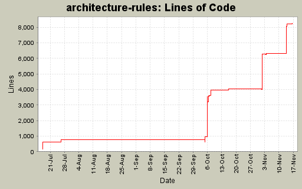

architecture-rules
Last Published: 11/20/2007
architecture-rules
Project Documentation
Project Information
Project Reports
Development Statistics for architecture-rules
Generated:
2007-11-20 14:08
Report Period:
2007-07-17
to
2007-11-16
Total Files:
70
Total Lines of Code:
8263
Developers:
2
Developers
Commit Logs
Lines of Code
File Statistics
Directory Sizes
Repo Heatmap
LOC and Churn
Lines of Code

Developers
Author
Lines of Code
mikenereson
10905 (100.0%)
luminary@gmail.com
3 (0.0%)
more...
Directories
[root]
(2 files, 440 lines)
docs
(0 files, 0 lines)
src
(0 files, 0 lines)
main
(0 files, 0 lines)
java
(0 files, 0 lines)
com
(0 files, 0 lines)
nereson
(0 files, 0 lines)
architecturerules
(0 files, 0 lines)
seventytwomiles
(0 files, 0 lines)
architecturerules
(2 files, 168 lines)
ant
(1 files, 122 lines)
configuration
(3 files, 311 lines)
xml
(5 files, 665 lines)
domain
(5 files, 773 lines)
exceptions
(7 files, 471 lines)
services
(6 files, 762 lines)
org
(0 files, 0 lines)
apache
(0 files, 0 lines)
commons
(0 files, 0 lines)
io
(1 files, 226 lines)
springframework
(0 files, 0 lines)
core
(0 files, 0 lines)
io
(1 files, 541 lines)
util
(2 files, 128 lines)
resources
(1 files, 23 lines)
test
(0 files, 0 lines)
java
(0 files, 0 lines)
com
(0 files, 0 lines)
nereson
(0 files, 0 lines)
architecturerules
(0 files, 0 lines)
seventytwomiles
(0 files, 0 lines)
architecturerules
(4 files, 404 lines)
ant
(1 files, 95 lines)
configuration
(2 files, 385 lines)
xml
(3 files, 767 lines)
domain
(2 files, 673 lines)
exceptions
(5 files, 514 lines)
services
(2 files, 245 lines)
test
(1 files, 6 lines)
com
(0 files, 0 lines)
seventytwomiles
(0 files, 0 lines)
dao
(2 files, 24 lines)
hibernate
(2 files, 53 lines)
model
(1 files, 43 lines)
services
(2 files, 56 lines)
test
(1 files, 54 lines)
web
(0 files, 0 lines)
spring
(2 files, 36 lines)
resources
(4 files, 278 lines)
Generated by
StatSVN
@VERSION@